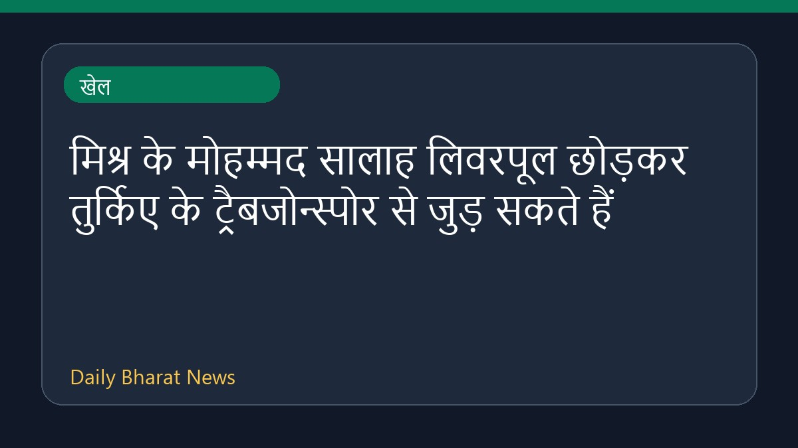

मिश्र के मोहम्मद सालाह लिवरपूल छोड़कर तुर्किए के ट्रैबजोन्स्पोर से जुड़ सकते हैं

मिश्र के फुटबॉलर मोहम्मद सालाह के लिवरपूल छोड़कर तुर्किए के क्लब ट्रैबजोन्स्पोर में शामिल होने की संभावना जताई जा रही है। विभिन्न खेल मीडिया रिपोर्ट्स के अनुसार, तुर्की क्लब ट्रैबजोन्स्पोर ने सालाह को इसी सप्ताह अपने साथ जोड़ने के लिए औपचारिक बातचीत शुरू कर दी है। इस संभावित ट्रांसफर को लेकर स्पेन, साउदी अरब और तुर्किए के क्लबों के बीच चर्चाओं का दौर जारी है। हालांकि, इस पूरे मामले पर अभी विस्तृत आधिकारिक जानकारी सीमित रूप में ही उपलब्ध है।
मूल स्रोत: Sports News Sources
Egypt’s Mohamed Salah looks set to swap Liverpool for Turkiye’s Trabzonspor - aljazeera.com ↗
Egypt’s Mohamed Salah looks set to swap Liverpool for Turkiye’s Trabzonspor - aljazeera.com ↗